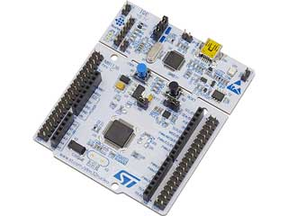

ロボコンサークルではRenesasのSHやRXシリーズのマイコンを使用していました。
ですが、ピンの数のバリエーションやネットの情報の少なさ等からSTMに乗り換えを行いました。
最初はSTMの開発ボードを購入してロボットに載せていました。
ですが、基板のサイズを自由に変えてロボットに組み込めるようにするためにチップを購入して自分たちで自作基板を作成しました。
また、基板エディタをMinimal Board EditorからKicadへ乗り換え、さらに中国の基板業者へ発注する方法も確立しました。
Renesas-RX自作基板
初めて外注した基板がRXマイコン用の基板です。この時にRenesasの開発ボードの選択肢の少なさ、一つの機能を立ち上げるのにユーザマニュアルを読み込まないといけないことなどからSTMの検討を始めていました。
STMブレイクアウトボード試作基板

STMの機能の確認、開発のしやすさを確認するためにピンを大量に出したブレイクアウトボードを自作しました。
開発環境が整っていること、HALライブラリが充実していることからSTMに移行することを決めました。
電源部分や書き込み部分に試行錯誤しており、これをブログにまとめています。
STM32F303K86Tの自作ボードにおける書き込み部分の回路
ロボコン用STM基板
社会人になって川崎ロボコンに出るように作成したSTM基板です。プロポの信号を読みだしてモータを一つ動かす機能を持っている基板です。
開発ボードではなく、チップから基板を作成しているので、かなりコンパクトに作成できています。
プロポの信号を正確に読み込むのにHALライブラリのPWM Input機能を使用しており、ネットの検索結果では出てこなかったので、ブログで使用方法についてまとめています。